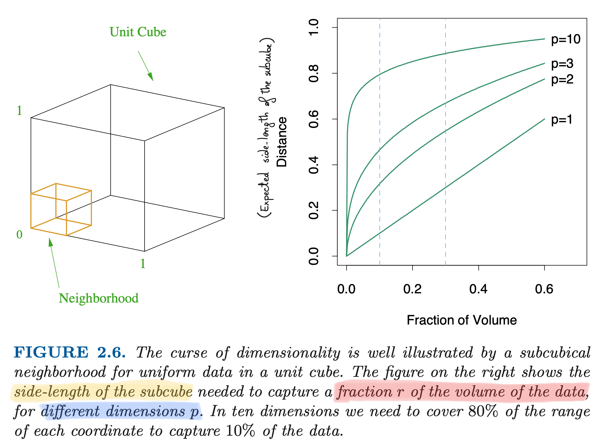

The curse of dimensionality
Data Mining - CdL CLAMSES
Homepage
“In view of all that we have said in the foregoing sections, the many obstacles we appear to have surmounted, what casts the pall over our victory celebration? It is the curse of dimensionality, a malediction that has plagued the scientist from the earliest days.”
Richard Bellman
In Unit C we explored linear predictive models for high-dimensional data (i.e. p is large).
In Unit D we explored nonparametric predictive models for univariate data, placing almost no assumptions on f(x).
Thus, the expectations are that this unit should cover models with the following features:
- High-dimensional, with large p;
- Nonparametric, placing no assumptions on f(\bm{x}).
The title of this unit, however, is not “fully flexible high-dimensional models”.
Instead, it sounds like bad news are coming. Let us see why, unfortunately, this will be indeed the case.
Multidimensional local regression
- At least conceptually, kernel methods could be applied with two or more covariates.
- To estimate f on a specific point \bm{x} = (x_1,\dots,x_p)^T, a natural extension of the Nadaraya-Watson takes the form \hat{f}(x) = \frac{1}{\sum_{i'=1}^n w_{i'}(\bm{x})}\sum_{i=1}^n w_i(\bm{x}) y_i = \sum_{i=1}^n s_i(\bm{x}) y_i, where the weights w_i(\bm{x}) are defined as w_i(\bm{x}) = \prod_{j=1}^p \frac{1}{h_j} w\left(\frac{x_{ij} - x_j}{h_j}\right).
This estimator is well-defined and it considers “local” points in p dimensions.
If the theoretical definition of multidimensional nonparametric tools is not a problem, why are they not used in practice?
The curse of dimensionality I
- When the function f(x) is entirely unspecified and a local nonparametric method is used, a dense dataset is needed to get a reasonably accurate estimate \hat{f}(x).
However, when p grows, the data points becomes sparse, even when n is “big” in absolute terms.
In other words, a neighborhood of a generic point x contains a small fraction of observations.
Thus, a neighborhood with a fixed percentage of data points is no longer local.
- To put it another way: to get a local neighborhood with 10 data points along each axis, then 10^p data points are needed in the corresponding p-dimensional neighborhood.
- As a consequence, much larger datasets are needed even for moderate p, because the sample size n needs to grows exponentially with p.
The curse of dimensionality II
The following illustration may help in clarifying this notion of sparsity. Let us consider data points that are uniformaly distributed on (0, 1)^p, that is \bm{x}_i \overset{\text{iid}}{\sim} \text{U}^p(0, 1).
Then, the median distance from the origin (0,\dots,0)^T to the closest point is: \text{dist}(p, n) = \left\{1 - \left(\frac{1}{2}\right)^{1/n}\right\}^{1/p}.
In the univariate case, such a median distance for n = 100 is quite small: \text{dist}(1, 100) = 0.007.
Conversely, when the dimension p increases, the median distance becomes: \text{dist}(2, 100) = 0.083, \quad \text{dist}(10, 100) = 0.608, \quad \text{dist}(50, 100) = 0.905. Note that even with a much larger sample size, we get \text{dist}(10, 1000) = 0.483.
The vast majority of points is close to the boundary, making predictions very hard.
The curse of dimensionality III
Another intuition of the curse of dimensionality is given by the following argument. Let us consider again uniform covariates \bm{x}_i \overset{\text{iid}}{\sim} \text{U}^p(0, 1).
Let us consider a subcube which contains a fraction r \in (0, 1) of the total number of observations n. In the univeriate case (p = 1), the side of this cube is simply r.
In the more general case, in can be shown that, on average, the side of the cube is \text{side}(r, p) = r^{1/p}, which is again exponentially decreasing in p.
Hence, when p = 1 the expected amount of points in the local sub-interval (0, 1/10) is again 1/10.
Instead, when p = 10 the amount of point is the local subcube (0, 1)^{10} is n \left(\frac{1}{10}\right)^{10} = \frac{n}{1.000.000.000}.
The curse of dimensionality (HTF, 2011)

Implications of the curse of dimensionality
In the local kernel smoothing approach, we can precisely quantify the impact of the curse of dimensionality on the mean squared error.
Under some regularity conditions, the Nadaraya-Watson and the local linear regression estimator has asymptotic mean squared error \mathbb{E}\left[\{f(x) - \hat{f}(x)\}^2\right] \sim n^{-4/5}, which is slower than the parametric rate n^{-1}, but still reasonably fast for predictions.
Conversely, it can be shown that in high-dimension the asymptotic rate becomes \mathbb{E}\left[\{f(\bm{x}) - \hat{f}(\bm{x})\}^2\right] \sim n^{-4/(4 + p)}.
Thus, the sample size for a p-dimensional problem to have the same accuracy as a sample size n in one dimension is m \propto n^{c p}, with c = (4 + p)/(5p) > 0.
To maintain a given degree of accuracy of a local nonparametric estimator, the sample size must increase exponentially with the dimension p.
Escaping the curse
Is there a “solution” to the curse of dimensionality? Well, yes… and no.
If f(x) is assumed to be arbitrarily complex and our estimator f(x) is nonparametric, we are destined to face the curse.
However, in linear models you never encountered the curse of dimensionality. Indeed: \frac{1}{n}\sum_{i=1}^n\mathbb{E}\left\{(\bm{x}_i^T\beta - \bm{x}_i^T\hat{\beta})^2\right\} = \sigma^2\frac{p}{n}, which is increasing linearly in p, but not exponentially.
Linear models make assumptions and impose a structure. If the assumptions are correct, the estimates exploit global features and are less affected by the local sparsity.
Nature is not necessarily a linear model, this is why we explored the nonparametric case.
Nonetheless, making (correct) assumptions and therefore imposing (appropriate) restrictions is beneficial, to the extent that is unavoidable in high-dimensions.
Escaping the curse
The multidimensional methods you will study (GAM, trees, random forest, boosting, neural networks, etc.) deal with the curse of dimensionality by making (implicit) assumptions.
These assumptions differentiate because of:
- The particular nature of the knowledge the impose (e.g. no interactions, piecewise constant functions, etc.);
- The strength of this assumption;
- The sensibility of the methods to potential violation of the assumptions.
Thus, several alternative ideas and methods are needed; there is no single “best” algorithm.
This is why having a well-trained statistician in the team is important, because she/he will be able to identify the method that best suit the specific applied example.
…or at least, she/he will be aware of the limitations of the methods.
References
- Main references
- Section 4.3 of Azzalini, A. and Scarpa, B. (2011), Data Analysis and Data Mining, Oxford University Press.
- Section 2.5 of Hastie, T., Tibshirani, R. and Friedman, J. (2009), The Elements of Statistical Learning, Second Edition, Springer.
- Sections 4.5 and 5.12 of Wasserman, L. (2006), All of Nonparametric statistics, Springer.